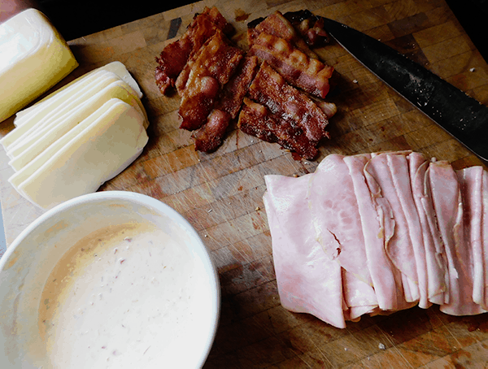

Hoagie

Description
Warm, toasty ham, cheese, and bacon in a delicious, soft roll!
Ingredients
- 1 soft, Italian submarine/deli roll
- 3 slices Virginia or Black Forest Ham
-
4 slices bacon. Note: dry-cured, naturally smoked bacon works best!
-
2 slices, white American cheese (from the deli, not fake plastic-wrapped
singles)
- spicy mustard
Steps
- Preheat oven to 400 degrees F.
-
Lay out bacon on a baking sheet and bake in the oven for approx 20
minutes until crispy but not burned.
- Spread a thin layer of mustard on the inside of the rolls.
-
Layer 3 slices of ham along the walls of the interior of the roll.
- Cut the cheese slices in half and layer them above the ham.
- Add the slices of bacon atop everything else.
- Wrap the sandwich in aluminum foil, tightly.
-
Place the wrapped sandwich in the oven for approximately 12 minutes.
- Enjoy!